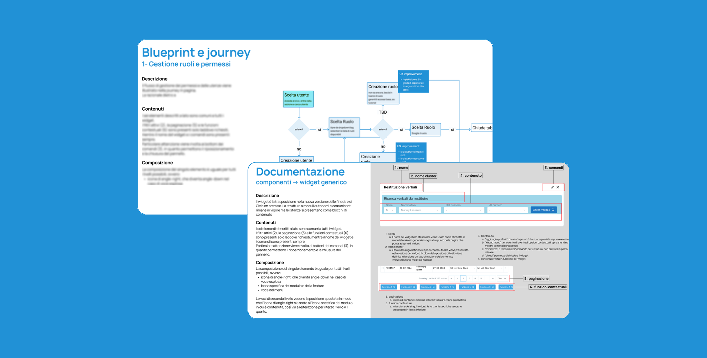
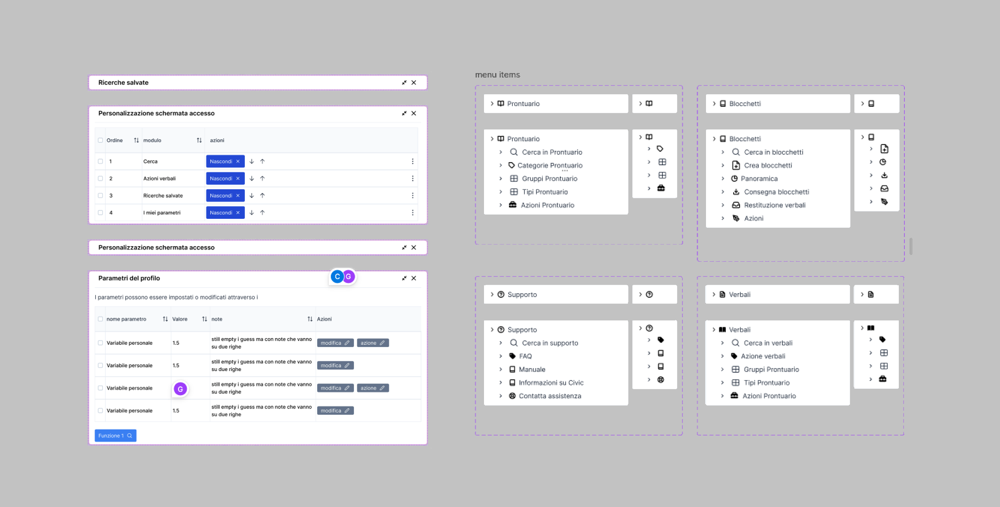

01 Compunet · Product Design & Strategy
Civic.
End-to-end redesign of a 25-year-old platform that manages the entire lifecycle of fines and ticket books. Redesign end-to-end di una piattaforma di 25 anni che gestisce l'intero ciclo di vita delle sanzioni e dei bollettari.
 Civic — platform
Civic — platform01 ContextContesto
Civic is a software designed to manage the entire lifecycle of fines and ticket books — the booklets used for issuing fines. It was developed 25 years ago and has been maintained over time to comply with traffic-law regulations. Civic è un software pensato per gestire l'intero ciclo di vita delle sanzioni e dei bollettari — i blocchetti usati per emettere le multe. È stato sviluppato 25 anni fa e mantenuto nel tempo per adeguarsi alle normative del codice della strada.
A local police department can manage the entire station, its personnel, fines, payments, photographic evidence, document management and API integrations with external services. Within the client's team, I was involved as a Product Designer and Product Strategist. Un comando di polizia locale può gestire l'intera stazione, il personale, le sanzioni, i pagamenti, le prove fotografiche, la gestione documentale e le integrazioni API con servizi esterni. Nel team del cliente sono stato coinvolto come Product Designer e Product Strategist.
02 RoleRuolo
I supported the project as a Product Designer, part of a consulting team alongside a frontend and a backend developer. I independently interfaced with the client's entire team and all stakeholders, including the owner of the commissioning company. Ho seguito il progetto come Product Designer, all'interno di un team di consulenza insieme a uno sviluppatore frontend e uno backend. Mi sono interfacciato in autonomia con l'intero team del cliente e con tutti gli stakeholder, incluso il titolare dell'azienda committente.
03 ChallengesSfide
Complexity and scaleComplessità e scala
The software is huge. Modules range from managing personnel and fines to handling payments, photographic evidence, document management and API integrations. The search fields alone are over 700, spread across 45 screens and 13 modules. Il software è enorme. I moduli spaziano dalla gestione del personale e delle sanzioni ai pagamenti, alle prove fotografiche, alla gestione documentale e alle integrazioni API. Solo i campi di ricerca sono oltre 700, distribuiti su 45 schermate e 13 moduli.
Inconsistent designDesign incoerente
Features were added over time without a unified design guideline, resulting in inconsistent behaviors and patterns. Le funzionalità sono state aggiunte nel tempo senza una linea guida di design unificata, con comportamenti e pattern incoerenti.
Lack of documentationMancanza di documentazione
No documentation existed for developers, nor manuals for users, and the project lacked a proactive roadmap. Each stakeholder had its own vision for the product's future. Non esisteva documentazione per gli sviluppatori né manuali per gli utenti, e il progetto era privo di una roadmap proattiva. Ogni stakeholder aveva una propria visione del futuro del prodotto.
Limited UX expertise & timeCompetenze UX e tempi limitati
The client team lacked UX knowledge, requiring parallel training. The initial 3-month timeline required prioritizing foundational elements like information architecture so developers could proceed efficiently. Il team del cliente non aveva competenze UX, richiedendo formazione in parallelo. La tempistica iniziale di 3 mesi imponeva di dare priorità a elementi fondanti come l'architettura informativa, così che gli sviluppatori potessero procedere in modo efficiente.

Blueprint, journey & documentation04 ActivitiesAttività
AnalysisAnalisi
- Mapped stakeholders' desired outcomes, roadmaps and concerns; created a research plan.Mappatura di obiettivi, roadmap e preoccupazioni degli stakeholder; creazione di un piano di ricerca.
- Ran workshops with operators to map the daily experience of Civic users.Workshop con gli operatori per mappare l'esperienza quotidiana degli utenti di Civic.
- 40+ hours of interviews with expert users to understand business logic and highway-code dynamics, mapping the service with a blueprint.Oltre 40 ore di interviste con utenti esperti per comprendere la logica di business e le dinamiche del codice della strada, mappando il servizio con un blueprint.
- Independently studied the software and mapped all elements, patterns, standards and conventions.Studio autonomo del software e mappatura di tutti gli elementi, pattern, standard e convenzioni.
DesignDesign
- Proposed key templates encapsulating the most common patterns as reusable "building blocks," so migrating functions became as simple as selecting the right pattern.Template chiave che racchiudono i pattern più comuni come "building block" riutilizzabili: migrare una funzione diventa semplice come scegliere il pattern giusto.
- Translated Civic's industry-specific conventions into a browser-oriented language, ensuring accessibility and up-to-date patterns.Traduzione delle convenzioni di settore di Civic in un linguaggio orientato al browser, garantendo accessibilità e pattern aggiornati.
- Defined a design system by adapting the PrimeNG library to the client's tone of voice and branding.Definizione di un design system adattando la libreria PrimeNG al tono di voce e al branding del cliente.
Strategic supportSupporto strategico
- Helped define the product roadmap — tools and methods to redefine scope, prioritize the backlog and establish a collaborative framework (Scrum adapted to the team).Supporto nella definizione della roadmap di prodotto — strumenti e metodi per ridefinire lo scope, prioritizzare il backlog e stabilire un framework collaborativo (Scrum adattato al team).

Modular components & navigation05 OutcomeRisultato
The modular design was successfully implemented: pages open clean, showing only the search module, then dynamically compose themselves by adding widgets based on the user's task progress — enhancing focus and efficiency. Il design modulare è stato implementato con successo: le pagine si aprono pulite, mostrando solo il modulo di ricerca, per poi comporsi dinamicamente aggiungendo widget in base all'avanzamento del compito — migliorando focus ed efficienza.
We introduced the ability to save personalized layouts based on recurring activities and roles, creating widget presets that instantly load the optimal interface and significantly reduce preparation time. Abbiamo introdotto la possibilità di salvare layout personalizzati in base ad attività e ruoli ricorrenti, creando preset di widget che caricano all'istante l'interfaccia ottimale e riducono molto i tempi di preparazione.
- New patterns recognized as fast and functional by Civic's specialized operators.Nuovi pattern riconosciuti come rapidi e funzionali dagli operatori specializzati di Civic.
- A new AI-ready information architecture — far more horizontal and searchable.Una nuova architettura informativa pronta per l'AI — molto più orizzontale e ricercabile.
- Guidelines established for designing new screens in the future.Linee guida definite per progettare nuove schermate in futuro.
06 Key learningsLezioni chiave
- In environments without a design culture, both the content and the way it's communicated matter. Non-design professionals aren't always used to discussing a product they've invested 25 years in.In contesti senza cultura del design contano sia il contenuto sia il modo in cui lo si comunica. Chi non viene dal design non è sempre abituato a discutere un prodotto su cui ha investito 25 anni.
- Always look at the glass as half full: even if a screen is inaccessible or outdated, the business logic and operational flow might still be excellent.Guardare sempre il bicchiere mezzo pieno: anche se una schermata è inaccessibile o datata, la logica di business e il flusso operativo possono comunque essere ottimi.